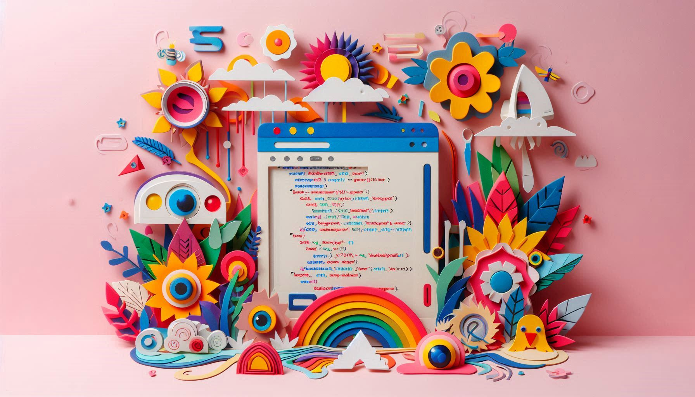

Этот сайт поможет тебе освоить HTML, CSS, JavaScript и перейти на уровень профессиональной разработки.
Начать обучениеПлан обучения, который поможет тебе двигаться от основ к продвинутым технологиям.
Познакомься со структурой веб-страницы, семантикой HTML, стилями и адаптивностью.
Изучи основы программирования на JavaScript и взаимодействие с DOM.
Разбираем популярные инструменты, упрощающие разработку: React, Redux, Next.js.
Фронтенд-разработка — это востребованная профессия, открывающая множество возможностей. Она позволяет создавать современные веб-приложения, улучшать пользовательский опыт и работать с передовыми технологиями. Компании по всему миру ищут специалистов, способных создавать удобные и красивые интерфейсы.
"Программирование похоже на искусство — чем больше создаешь, тем лучше становишься."
Лучшие источники для обучения фронтенду: